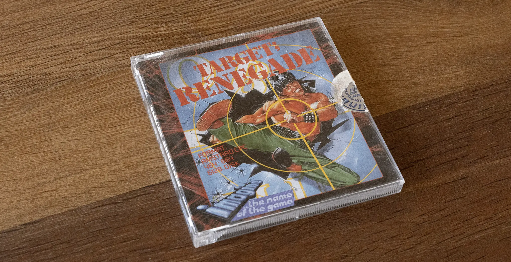
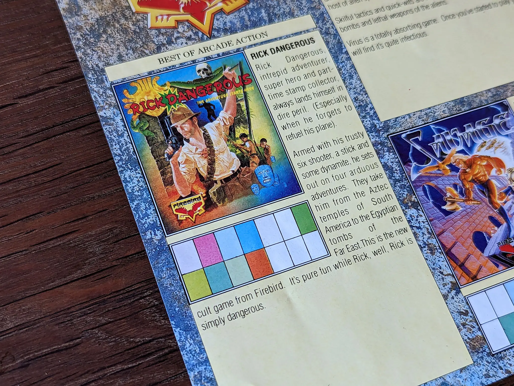
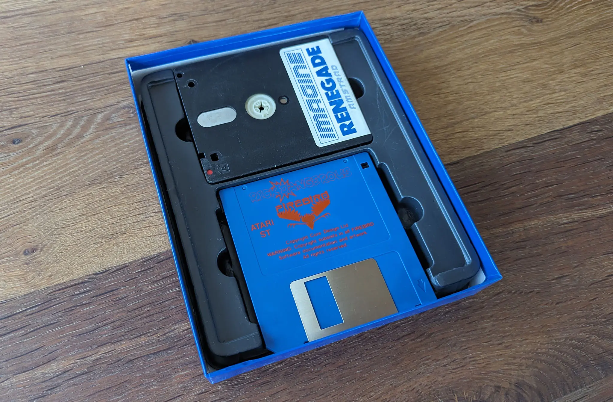
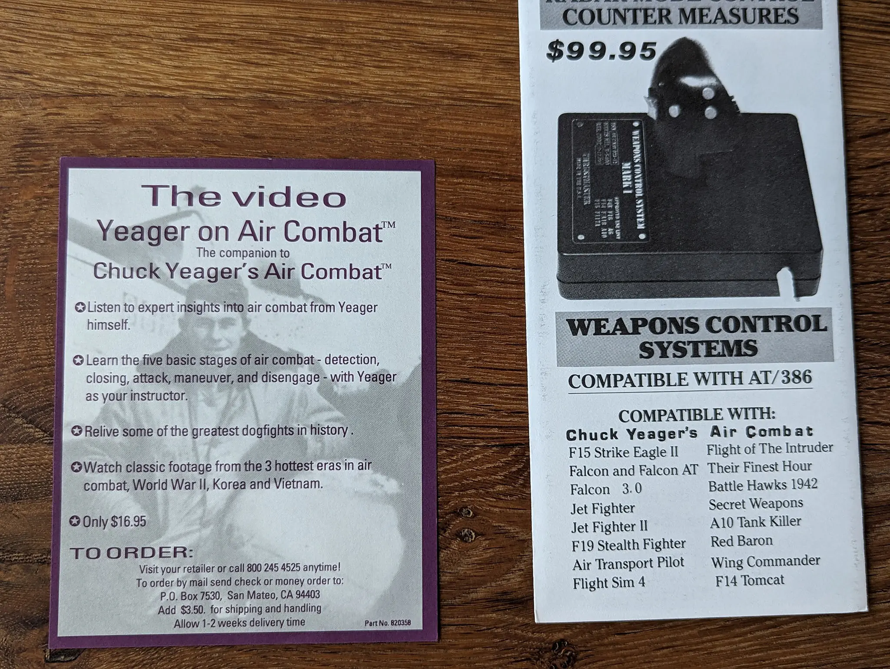
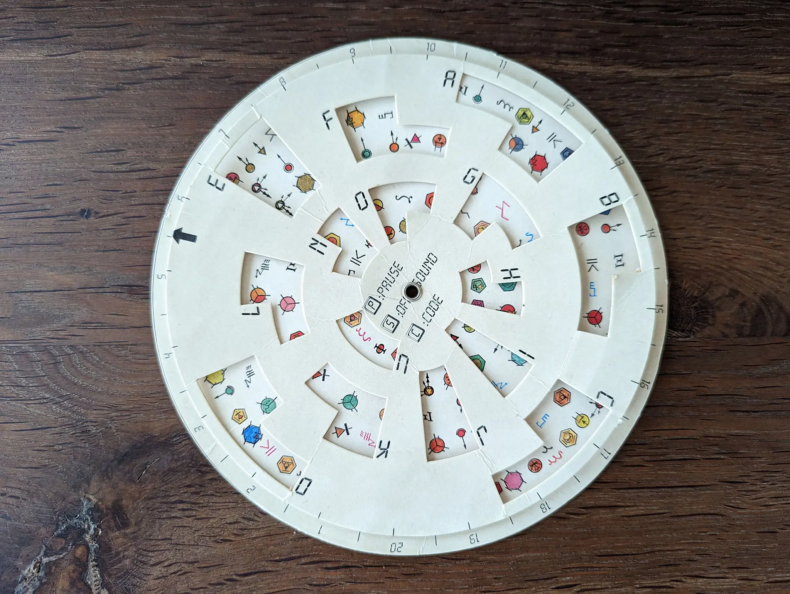
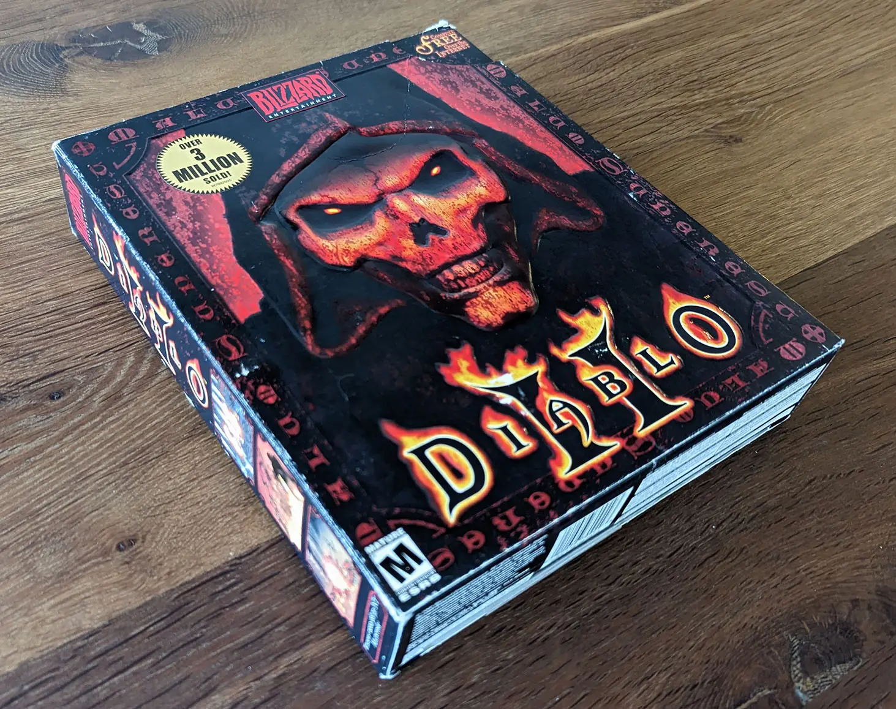
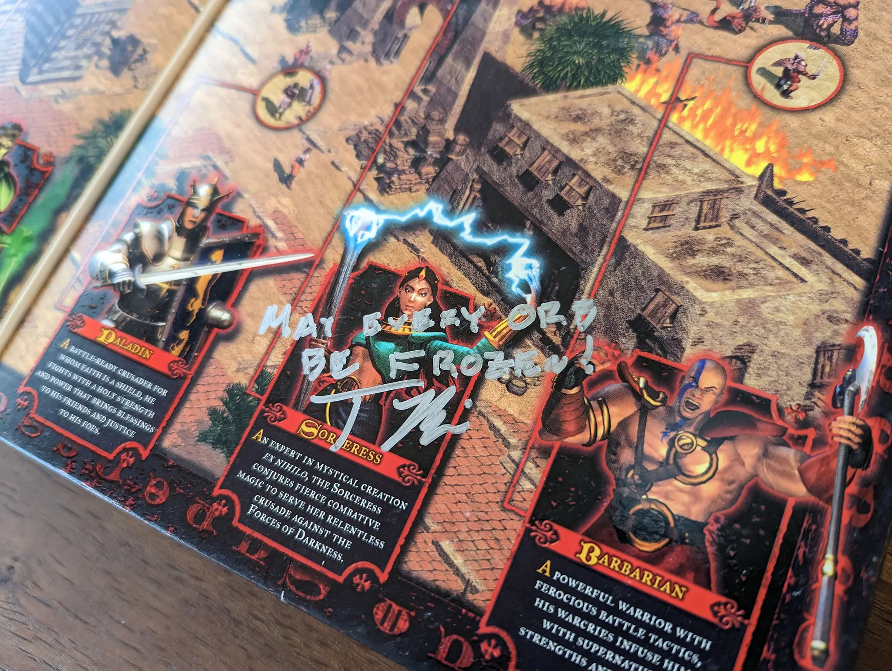
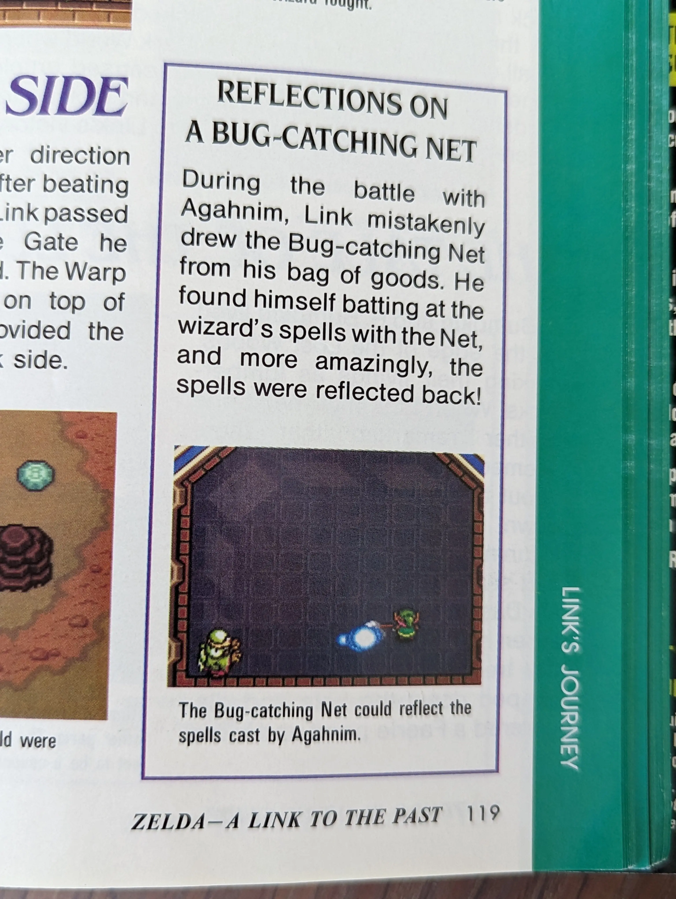

{kind=link}

There is a method to declutter a place. Get rid of the things that don't trigger good emotions. To clutter decorate my office, I took the opposite approach and surrounded myself with things I appreciate and inspire me. Above my monitor is a poster of Ronaldo Nazario facing Lazio in 1998. On the wall, there is a disassembled Pixel 1 from GRID Studio. Behind me, are my favorite video game big boxes.
The collection was built with the following ideas.
Some of these games are packed with goodies, artifacts to build up the title's ambiance, and even element doubling as innovative copy-protection and game experience enhancers. Here is a guided tour.
| Year | Name | Enjoyed on | Developers | Country |
|---|---|---|---|---|
| 1986 | Renegade | Amstrad CPC 6128 | Imagine Software | UK |
| 1987 | Gryzor | Amstrad CPC 6128 | Ocean Software | UK |
| 1988 | Target: Renegade | Amstrad CPC 6128 | Imagine Software | UK |
| 1988 | Last Ninja 2 | Amstrad CPC 6128 | System 3 | UK |
| 1989 | Pirates | Amstrad CPC 6128 | MicroProse Software | USA |
| 1988 | Captain Blood | Amstrad CPC 6128 | ERE Informatique | France |
| 1988 | Deluxe Paint II | PC | Electronic Arts | USA |
| 1989 | Prince of Persia | Amstrad CPC 6128 | Brøderbund Software | USA |
| 1989 | Rick Dangerous | Atari 520 STE | Core Design | UK |
| 1989 | Les voyageurs du temps | Atari 520 STE | Delphine Software | France |
| 1989 | Indiana Jones and the last Crusade | Atari 520 STE | Lucas Art | USA |
| 1990 | Maupiti Island | Atari 520 STE | Lankhor | France |
| 1990 | The Secret of Monkey Island | Atari 520 STE | Lucas Art | USA |
| 1990 | Loom | Atari 520 STE | Lucas Art | USA |
| 1990 | Operation Stealth | Atari 520 STE | Delphine Software | France |
| 1990 | The Secret of Monkey Island 2 | PC | ||
| 1991 | Chuck Yeager Air Combat | PC | Lucas Art | USA |
| 1991 | Another World | Atari 520 STE | Delphine Software | France |
| 1992 | Stunt Island | PC | The Assembly Line | UK |
| 1992 | Alone in the Dark | PC | Infogrames | France |
| 1992 | Dune 2 | PC | Westwood Studios | USA |
| 1993 | Syndicate | PC | Bullfrog | UK |
| 1993 | Strike Commander | PC | Origin Systems | USA |
| 1993 | Day of the Tentacle | PC | Lucas Art | USA |
| 1993 | DOOM | PC | Id Software | USA |
| 1994 | DOOM 2 | PC | Id Software | USA |
| 1993 | Ultima 8 | PC | Origin Systems | USA |
| 1995 | Command and Conquer | PC | Westwood Studios | USA |
| 1996 | Diablo | PC | Blizzard North | USA |
| 1996 | Duke Nukem 3D | PC | 3D Realms | USA |
| 1998 | Hλlf-Life | PC | Valve | USA |
| 2000 | Diablo 2 | PC | Blizzard North | USA |
| 2001 | Diablo 2: Lord of Desctruction | PC | Blizzard North | USA |
| 2001 | Ikaruga | Naomi (Arcade) | Treasure | Japan |
| 1992 | Zelda: A Link to the Past | Super Nintendo | Nintendo | Japan |
I never bought individual titles in the 80s. A far better deal was to get compilations like La Selection or The In Crowd. My guess is that many took the same option. As a result, single games are difficult to find and near impossible to get if they are among the best on a platform. Renegade for Amstrad CPC is one of them.
Double treat when good game get a good box. This gorgeous[1] cover art is by Bob Wakelin[2].
The shape of the case is especially made to fit Amstrad CPC 6128 disc (CF2 Compact Floppy Disc), it is close to a CD size but thicker. The cassette version (for Amstrad 464) is smaller in height and width but much deeper.
Notice the quality of the packaging since the floppy is not roaming free inside the case. It has an insert to keep it in place. The case is designed to accept either a CF2 or a 3½-inch floppy.
Speaking of near impossible games to find, the CPC disc version of Gryzor is high on the list. It kept on eluding me on Ebay so I got a C64 version instead. That is how I found out that the cases were in fact designed to also fit 5¼ inch floppies.
The cover artwork is also by Bob Wakelin. This time, he found some inspiration in Arnold Schwarzenegger's Predator movie.
Inside the box is the bare minimum with a one-sided manual. No need for insert, the floppy is tightly maintained in place since it barely fits in.
Same editor and same cover artist for the sequel of Renegade. This time Bob Wakelin used Joe Lewis's How To Master Bruce Lee's Fighting System as a model for the cover artwork.
Target Renegade added two player modes, a la Double Dragon. We spent countless hours virtually brawling (when we were not brawling IRL) with my brother.
Either the insert we saw in Renegade was dropped (doubtful) or the original owner lost it (likely).
There are much nicer versions of the Last Ninja 2 than this one. Those feature a poster, a shuriken, and even a ninja mask. But this budget version is the one my best friend at the time owned and we played together.
We never reached the level 3 (the sewers). That part of the game was on the face B of the disc. After hours of struggle we discovered, with horror, that side had bad sectors. Gameover before the game was over.
The US version of Sid Meier's Pirates! box[3] has three versions. The third one, which I call the " purple box", features a cover with an interesting story. It is better told by Jimmy Wilhelmsson in his dedicated article.
The tale and his website are a testament to what makes the Internet awesome. I highly recommend the read to understand how Bruce Friesch ended up painting a photo of a reconstitution of Sir Francis Drake’s galleon, the Golden Hind.

Inside the box is a manual, a floppy, an insert, copious instructions on how to run the game (not the dreaded launch command ùcpm, just standard RUN "DISK"), and the registration card (what did they ever use that for?).
Most importantly, the box contains a huge, high paper quality map which took the gaming experience to stratospheric levels!.
Wikis[4][5][6] claims that the game is double protected. There was a first layer of protection (on C64 it used Rapidlok V6 [7], I don't know what was used on CPC) to prevent sector to sector floppy transfer. There was a second layer where the game prompted players with a challenge to be answered via the game manual[8].
The third layer of protection was the map. Without it, you did not get to experience the game as intended. It was essential to complete some of the quests where the player collected four parts of a digital crude map[9] and had to figure out where it was on the physical map. Even with a fourth clue "Near X" it was not completely straight-forward. Of course at the time, the map dimension made it difficult to reproduce.
This map is a perfect element. It is both a copy protection and the coolest aspect of Pirates!. As a 10 year old, it made the game palpable. It compensated for the crude graphics of the game, by not having to fill the voids with imagination. frgcb.blogspot.com[10] and filfre.net[11] feature whole pages describing the various aspects of the game if you want to look further into it.
If you looked at the screenshots on frgcb's blog and wondered where Tortuga is, checkout 16°5'N 66°5'W.
Exploring space and adventuring into the unknown was what kids in the '80s grew up with. It was everywhere. Manned missions, launches, and landings were in the news but it was especially featured in fantasy TV series and movies. Everything was "Future World". That was before we stopped dreaming as Neil deGrasse Tyson puts it.
The cover of Captain Blood is the Southern Pinwheel galaxy (a.k.a Messier 83, a.k.a NGC 5236). It embodies the 80s fantasy that these worlds far away may be visited some day.
It is an especially precious game for someone with a French background because it was made in France, published by Infogrames with Jean-Michel Jarre signing the music.
Since its release, "Captain Blood" has reached cult status with numerous articles such a backstory [12], version comparaison[13], legacy[14], and making-of[15] praising it.
Messier 83, originally captured by the Wide Field Imager at ESO’s La Silla Observatory, in the Chilean Atacama Desert was revisited by Hubble in 2014.
I never "played" Deluxe Paint II but it is a piece of software which contributed to most of the games in the collection.
The emblematic cover art, based on King Tutankhamun sarcophagus, was done by Avril Harrison who also created many samples shipping with the tool. You can find many of them here. As Carl Svensson wrote, and this is an understatement, she is not as famous as she should be.
The inside is neat. With a floppy in an insert making it feel like a jewel. The 152 pages manual is gorgeous and even features a full page dedicated to Dan Silva.
Gotta love the Hi-Res mode in 640x480.
Like all highly successful games, many versions of PoP were published. All covers have an interesting, and occasionally controversial, story[16]. My favorite, the "Red Box", features a cover done by Robert Florczak.
The state of exhaustion as recounted by Jordan Mechner in his diary The Making of Prince of Persia: Journals 1985 - 1993" may explain why the inside of the box is a little disappointing. We find only free roaming floppies and a minuscule manual. As Didier Deschamps said, "Victory erases flaws".
There is a French version, which I call the "Black Box". It is beautiful with a black background over gold Arabic scriptures. Bonus point, the Amstrad CPC port was done by Brøderbund France. Despite having been released on many platforms, it is very hard to find (at least from the USA).
I studied the source code when it was released. Roland Gustafsson kindly answered questions about his copy protection named RWTS18.
F29-Retaliator is another game featuring a game manual doubling as a copy-protection system and hyper cool game mechanism.
The inside of the box is polished with an insert for the floppy and a convenient cheat sheet to place under the monitor and remember keyboard combinations.
The manual has three functions. Besaides explaining how to play, it lets the player answer the startup challenge (first copy-protection level). Most importantly, it is fully part of the gameplay. If you watch the longplay, at mark 8:47 the player selects a mission but there is no briefing. The details of where to go and at what time the action is going to happen are on the paper map. Players were free to pick from where to take off and which path to follow. Like on Pirates!, using real world paper maps was insanely cool.
In the UK version of the manual above, we can see how Mission 3 "intercept" takes action in Sector 8A.
They could not get the license for Indiana Jones but they managed to produce one of the best games running on all six platforms of the era. Learn more about all versions available on frgcb's website[17] and Youtube[18]. There is also an excellent making-of article by Simon Phipps himself on simonphipps.com[19].
The inside of the box is well furnished with a comic by Ian Gibson to help set the mood.
Also found inside a poster which doubles as a Rick arsenal detail / manual.
Perhaps the most interesting piece is the Microprose catalog.
The color code shows which games were available on which platforms.
The box is designed to fit either a cassette, a CF2 floppy, a 3½-inch floppy, or a 5¼-inch floppy.
|  |
The qualities of Rick Dangerous got it an enduring fanbase. There was even a remake planned for GBA. Sadly it got canceled since the right could not be acquired[20]. The port seems to have been redirected to Amiga and it looks A-MA-ZING[21]!
Gorgeous cover art by a then-unknown artist named Eric Chahi (who would, two years later, ship Another World). A good example of a game box that got butchered when published in the USA.
The box uses an elegant sleeve system. Once closed, it is nicely packed and won't inadvertently open.
The most interesting part is the uncanny protection system. Upon startup, the player was prompted with a page number and two coordinates (e.g.: B6). To continue, they had to place the transparent grid overlay over the manual and click on the vignette on the screen matching the coordinates.
I understand the usage of a photo for the cover, it must have helped with the sales. But I still wish they had let William L. Eaken take care of the cover art (he did Indiana Jones and the Fate of Atlantis and it looks amazing).
Since my wife also enjoyed this game but on a Macintosh, we got that version. That was the occasion to discover that Lucas Art used a cool trick to manage inventories and reduce cost. All boxes for all platforms were printed with a "IBM PC" label. To differentiate them, a sticker (in this case it says MACINTOSH over a gray background) was overlaid by hand. Notice how a single sticker covers both the front and the spin of the box.
The inside of the box has three discs, a registration envelop, and a manual mimicking Henry Jones's Grail Diary.
The copy protection mechanism involves code written in blue, covered with red prints. You need a special translucent red reader to read the blue code prompting the player when the game starts up.
A few pages of the "Grail" manual/diary.
Another good French production with great songs and a wow factor due to synthetic voices[22] (although they sounded much better in French than English). The cover art was made by Dominique Abraham[23]
The inside of the box is not super exciting. Not even a paper copy-protection system (it was done in software with sector-less floppies[24]).

Maupiti Island is a real place by the way. You can find it in French Polynesia on Google maps here.
Cover art by Steve Purcell. There are two versions for the IBM PCs. One is 16 colors, the other one is the remastered 256 colors version. Some people consider the 16 colors version to be the original "creative vision". Some people find the VGA version more pretty.
Inside is a huge copy of "The adventurer"
The copy protection is a spinning wheel. I am unsure how efficient it was at actually limiting piracy.
The back of the game has my favorite detail. A screen that does not appear in the game. It looks like at a time you could talk to the dog in the tavern.
Bonus nostalgia point with Evolution of PC Audio - As Told by Secret of Monkey Island.
I never played Loom. I never owned a Mac until I was 27. This is my wife's box and it is one of her favorite games. That is more than enough to be featured here.
I feel like I missed out on a gem here. There is a noteworthy 30-minute audio drama which explains the nature and history of the world.
The copy protection system is like Indiana Jones, with red ink obfuscating blue codes.
The manual is gorgeous. It even features a "spell book" section where you can write down new spells (four-note tunes) your character learned.
Another box standing out because of how severely it was butchered in foreign markets. It was twisted further when the publisher secured the right for James Bond and republished the game with yet another bad box as "007: James Bond - The Stealth Affair".
The box uses the same design as "Les voyageurs du temps" with an outer sleeve.
What is very cool is the copy protection system. You had to find a color photocopier (nearly impossible back in the day) to duplicate it. The surface is reflective to blind cameras so the copy protection is also protected!
The sequel of Monkey Island box cover art was also made by Steve Purcell. This is the IBM PC version. As explained in the Indy section, there is no sticker since this is the "default" platform which is directly printed on the cardboard.
Unlike Monkey Island 1, there is only a 256-colors version of this game since graphics were generated via scanned painting. That also explains why the Amiga, capable of 32 colors, got Monkey 2 but not the Atari ST.
Alile Monkey Island, the game is packed with cool stuff.
We find the same copy-protection mechanism except that it does not use colors.
A darn good flight simulator which had the good taste of being adapted to the hardware of its time (yes I am looking at you Origin Systems). Cover art by Dru Blair.
The manual received a lot of love. It teaches about piloting, from simple things like The Clock, Lift, Angle of attack, Envelope, to combat maneuvers like Scissors, Jink, Split S, Immerlmann, Yo-Yo, and Barrel Roll. The 183 pages end with details of all the planes you can pilot and face in the game.
From the image on the cover, I thought Chuck Yeager had passed away in the 80s. That was in the 90s. This glorious man lived to see 97.
The inside features an ad for the Thrustmaster WCS which back then felt like it could be acquired for the price of one arm and a leg. The VHS is very hard to find but someone kindly uploaded it on Youtube.
The cover art of Another World was painted by the creator of the game himself, Eric Chahi. It is a hard version to find since Interplay did a particularly outstanding job of producing the most ugly box possible for the US market.
The inside feels a big empty with a thin manual and a copy protection protection wheel.
I loved this game so much that I spent a lot of time studying the reverse engineered source code produced by Gregory Montoir. Subsequently, I wrote a series of eight articles studying how the ports were made for each platform at the time, including Amiga, Atari, DOS, Super Nintendo and more.
A game that belongs in the Hall of Fame (see review). It enjoyed a vibrant community at the time which gathered into the Stunt Island Filmmakers' Association (SIFA). Some of the production quality, like Mickey's revenge by Christain Zane, were very high.
Ridiculously low requirements, since the game could run on 570 KiB of RAM. But you had to find 13 MiB on your hard-drive to install it from the floppies.
The voluminous handbook describes all stunts available and the planes.
The best part is once again the map. It felt like being a real director to fly around, scoot for locations, and find hidden spots on the map.
The spin of the box reveals the logistical nightmare to deal with customers having either 5 1/2-inch or 3 1/2-inch drives. They could be swapped by mail after purchase. Unless the distributor decided not to. In this case, Stunt Island puts it out there (5.25" disk...not available).
In 2020, I had the privilege to interview Adrian Stephens, who wrote the game engine.
Artwork by Gilles Francescano, weirdly remade for the US version (by Bruce Eagle) for a similar looking result.


The bottom of the box mentions the French Internet of the time. Minitel numbers all started with 3615. Like many games from Disney, this title supported the "Disney Sound Source". Again, notice the ridiculously low requirements. 560 KiB RAM, 16 Mhz processor, and mandatory HDD.
Like the Rick Dangerous catalog, Disney tried to communicate which game was available for which platform. Not a mince task, even with Michey's help.
The copy protection is very interesting. They used a ridiculously tiny book. I guess they tried to make it hard to photocopy.
The latest graphic cards at the time used the VGA system, capable of 256 colors (vs 16 colors in CGA). Games supporting it proudly advertised it. The same thing went for audio. Adlib came up with an extension card allowing decent music via MIDI playback and it was huge.
The game that made people love RTS. There is a never published Insider Guide from an unknown author which contains a wealth of details about the making-Of.
The US cover art is by Andrew Wright. I find the European version (sold as "The Battle for Arrakis" instead of "The Building of a Dynasty") by Lauren Rifkin to have prettier artwork. It also proudly advertised digitized voices effects, which gives it a nice "vintage" touch.
The game ran on 564 KiB RAM. If you wanted the fancy sound effects (and you had a sound card to support them), you needed to sell a kidney and get 2MiB of RAM.
The biggest of the big boxes I own. The European version (where Bullfrogs was based) was excessively green for my taste. I got the US version instead. The back of the box is peculiar since it does not try to sell anything. There is no marketing, text, or game screenshots, it is just another full size artwork.
Another, even more peculiar, aspect of the box is that the spin advertises "IBM AT or Compatible; Not copy protected". My guess is that instead of fighting it, they decided to embrace piracy. "Buy one and give a copy to your friend"? Or were they trolling and the discs were in fact copy protected?
I have a mild case of obsession with Strike Commander, the game that in fact barely really flew on a 486 DX2 66Mhz. I played it on a fake 486 (486 SLC) 25 MHz with all settings set to minimum. And I loved it.
Even though each cost only $1 to manufacture, using eight floppies for a game must have hurt its profitability tremendously[25]. Using that many floppies was a signature move from Origin Systems.
Another signature move from Origin was to release titles barely able to run on the most powerful PC available. At the time, a 486 CPU running at 33 Mhz, with 4 MiB of RAM, and 27+ MiB HDD space (actually 39 MiB once maps were uncompressed) was insane.
We did what we could to keep up. For Christmas 1994, my brother and I wished for a single joined item. That is how we got our 2MiB RAM chip extension. I make myself feel better about the sacrifices my parents made thinking that it led to good careers for both of us.
The beautiful "Sudden Death" magazine faked a "Soldier Of Fortune" for pilots. It contains interviews and ads of both the team you join in the game, "The Wildcats" and their arch-nemesis, "The Jackals". What a great way to set the environment.
It is packed with jokes like an ad for Strike Commander promising a release for Christmas 2012. Page 44 features an ad from a programmer named Mr Zap seeking to recover 900 MiB of lost data. This is a tongue in cheek reference to a SC developer who erased the whole backup[26] on their first day at Origin Systems.
This title left such an impression on me that I spent several months reverse engineering the assets, and even interviewed Frank Savage who was a programmer on the project.
Yup, I got it in French too!
Amazingly, "Sudden Death" magazine was entirely translated. What an effort it must have been to typeset all of that. But we had made the effort to get to 4MiB of RAM with my bro so my guess is that Origin felt like they owed us.

There are actually two Japanese versions of Strike Commander but I did not push it to the point of also getting the FM-Towers. I only got the PC-98 one.
The inside is neat and well organized despite containing eight floppies and much paper. All eight floppies are stacked on top of each other with a nice stabilizer.
Sudden Death magazine did not get a binding treatment.
At this point it looks like Lucas Art abandoned the goodies. The big box of DotT is full of nothing. The complete opposite of the software which is rich with adventures, visuals, animations, sound effects, and music.
The copy protection is not hard to circumvent. It looks like Lucas Art pushed something just a little annoying to copy. After a bit, Dr. Fred challenges the player to complete the plans for his Super Battery. You must look up the eight pages manual and replicate one of the sixteen battery configurations (example).
The hint book on the other side is very furnished with object locations and timeline diagrams.
There are two versions of DOOM box available (excluding the innumerable shareware versions). There is the mail order one which you got when you sent id Software money. It is small, thin, and made of low-quality cardboard. The Australian version, released by Manaccom, was retailed and therefore had to be more robust. It is big and the cardboard is of much higher quality. I also happen to love the color scheme.

The inside is packed with warnings of all sorts. DOOM also required a lot of conventional RAM so there is a special flyer to help configure your PC.
Boxes always had this system exposing a minimum requirements and a recommended PC configuration. In the case of DOOM, a 386 CPU with 4MiB would get you to see 10 fps. Even a 486 DX2-66 was not enough to max out the renderer. Only with a Pentium you could max out the game logic at 35 fps.
I loved this game so much I spent quite some time studying the source code. So much so that I wrote a whole book about it.
As we reach Doom 2, CD-ROM starts to be used to distribute games instead of floppies. A CD cost 2x less than a floppy yet stored roughly 433x more data.
As you may have guessed, since it is a Mac version, it is my wife's box.
A lot of people hated[27] U8. I did not know any better and I had a blast exploring what felt like an open world. I also find the color scheme of the game pretty.
Ultimate boxes always game with an artifact and a map. I don't think they were very useful to the gameplay.
Notice how the requirements dropped the word "IBM". PC became "DOS" instead of "IBM or Compatible".
When CD-ROMs became available, game developers struggled to leverage it properly. Games such as 7th Guest of Myst did a good job but most felt like they were just trying to fill the space. Westwood found a good balance, using the space to tell the campaign story with FMV (Full Motion Video). Yes, full screen video had a dedicated acronym because it was so novel at the time.

The game that made people switch to Windows 95. Before that MS-DOS was still the gaming OS.
Internet gaming for free. A strong selling point.
Duke could be purchased on floppies but this version uses CD-ROM. In the beginning that medium was an effective copy-protection mechanism. All PCs came with RW floppy drives but the CD-ROM drives were read only.
CD burners were expensive, complicated with their SCSI interfaces (while motherboards only had IDE), and unforviging since CDs had to be burnt in one session (if something went wrong, you had to throw away the CD). Burning CDs was HARD.
Anyway, heil to the king baby.
Not much inside the box. Had I ever gotten it, I don't think I would have read the manual anyway. All I ever needed was an RPG.
I won a local tournament of Duke 3D death-match, using only the RPG. The first price was 3h of Internet, which I had no idea what to do with since I did not even know what a search engine was. I also studied the source code a lot when it became open source.
I don't understand the artistic decision of the split-face on the US box. This is the UK version.
It was probably cheaper to print color on a thin sleeve and stuff it with cardboard to help the box retain its shape. Eventually distributors cut the cardboard before cutting the box altogether.
Never have I played a game more than this one. I even managed to become re-addicted when the remaster got released.
 My copy is signed by Theodore Bisson who was a programmer on the game. Frozen Orb was his favorite spell. He refused to tune it down and it was quite powerful upon game release. Hence his signature "May every orb be frozen."
Theodore Bisson also signed the extension! At the time I told him I had never found a Stone of Jordan. So he wished me good luck on that!
Ikaruga was never published on Dreamcast in the US. I find that surprising for what may be the best shoot em up of all time. I love the orange/white color scheme of the Dreamcast game cases and of course the cover art by Yasushi Suzuki.
The full black GD-ROM is elegant. I wrote about the copy-protection system a while ago.
These boxes feature something called obi/spine cards. To this day I have no idea what they are used for and why collectors make a big deal of them.
During my trip in Japan, I visited Taito HEY in Akihabara where I saw a sararīman finish the whole game with a single 100¥ coin.
I studied Ikaruga's game engine extensively back when I started 3D programming in Java (the only language I knew at the time). I wrote an asset extractor and a renderer. Then I wrote an amateurish engine mixing orthogonal and perspective projection. Eventually I mastered the art of matricing / homogeneous coordinates and wrote a solid engine in C to power Shmup.
Zelda, A Link to The Past is, by far, the game that made the strongest impression on me. For a kid who, up to that point, had been experiencing games on non-hardware accelerated, framebuffered, computers using buzzer for audio, discovering Nintendo's masterpiece was entering a whole new world made of beautiful musics, crips sound effects, color rich visuals, and butter smooth 50fps animations.
Zelda III stands out. In my gamer life and therefore on my shelf. I have studied neither the SNES hardware nor the game engine. I keep it for my old age. I also secretly hope somebody writes a book about it so I don't have to do it. In the meantime, there are some marvelous video series by RGMechEx.
The box is a small package overflowing with cool stuff.
But really the coolest part is, of course, the map.
A pretty high quality guide (at least at the time) was even released by Nintendo.
|  |
{kind=link}
{kind=link}
{kind=link}
{kind=link}
{kind=link}
{kind=link}
{kind=link}
{kind=link}
{kind=link}
{kind=link}
{kind=link}
{kind=link}
{kind=link}
{kind=link}
{kind=link}
{kind=link}
{kind=link}
{kind=link}
{kind=link}
{kind=link}
{kind=link}
{kind=link}
{kind=link}
{kind=link}
{kind=link}
{kind=link}
{kind=link}
{kind=link}
{kind=link}
{kind=link}
{kind=link}
{kind=link}
{kind=link}
{kind=link}
{kind=link}
{kind=link}
{kind=link}
{kind=link}
{kind=link}
{kind=link}
{kind=link}
{kind=link}
{kind=link}